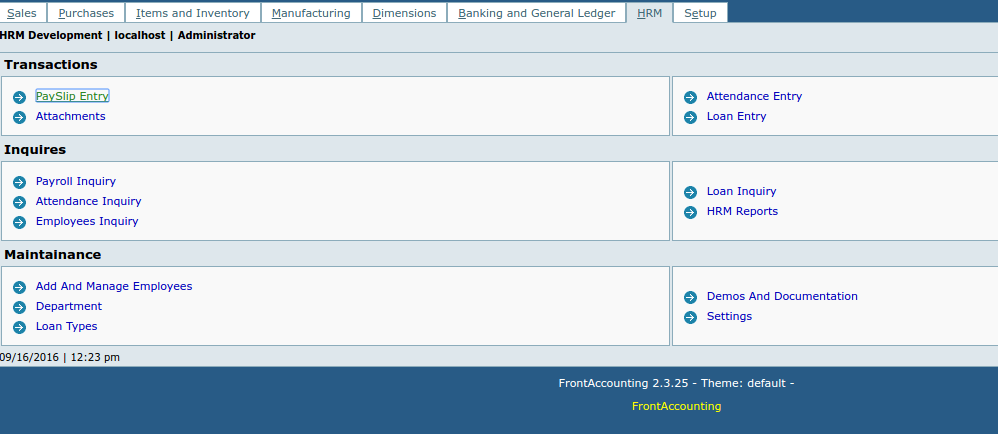
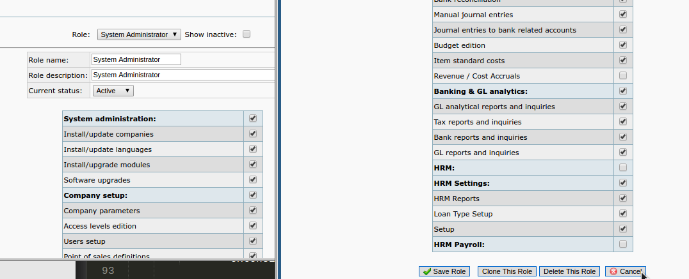
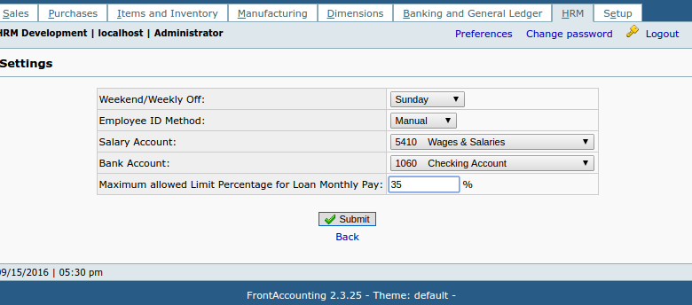
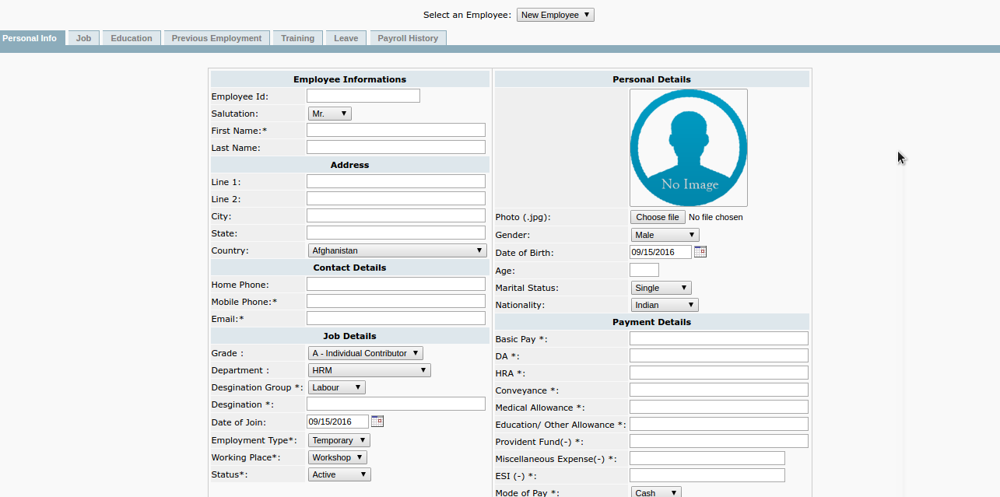
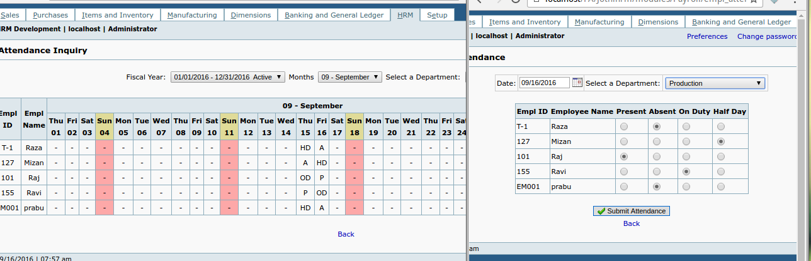
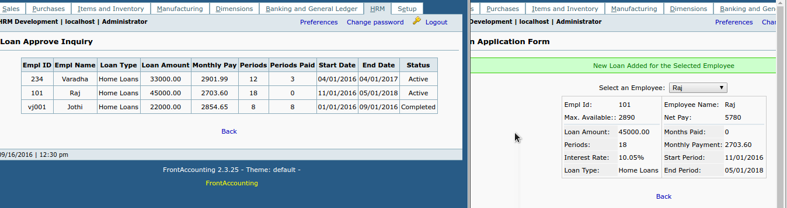
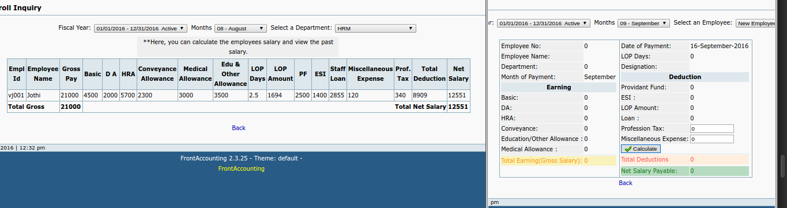
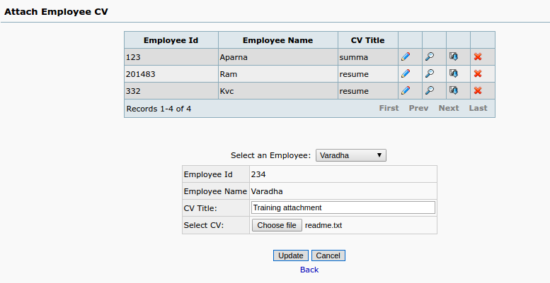
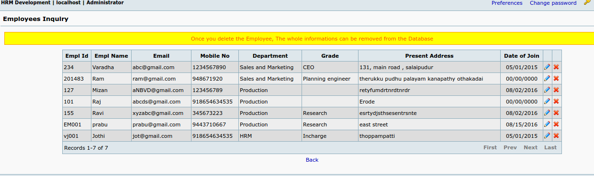

HRM Documentation
Introduction
This is a compact extension to maintain employee records and perform the Attendance and Payroll operations, Also you can maintain a records of it. with Help of HRM extension, you can take addand maintain employees informations and you can print their names list with contact details based on department list.

HRM extension can allow you to change the employee details anytime and you can keep the record of employees remain same.
HRM extension will bring you the feature of full Attendance and Half day attendance,and few other attendance types to record daily routine attendances.
Payroll can be processed for each and every employee independently. and it will record the details of payslip form components on database for the payroll history management.
This is elaborated version of HRM from my Extension (Simple HRM). You can play around it with facility to configure employee payroll independently, without working with formula.
Loan feature to keep track employee loan and also maximum allowed loan size also measured here with this feature.
You can make PDF reports to save and email the reports to anyone.
Let's see the functionalities and Requirements in details with help of below elaborated tutorial.
Requirements
HRM extension can be working under FrontAccounting(2.3.RC) And Above.
For the FrontAccounting2.4 RC,There are some installation problem with the core. But the extension works fine in all aspects within FrontAccounting 2.4 RC1.
I have some extended readme for the 2.4RC1 users.
It works inside each company separately. So its multi company supported, you can enable and activate it to any companies under the same FrontAccounting.
FrontAccounting is more helpful for the Small and Medium level Enterprise(SME). So This is a very good extension to work inside it for the amount of 100- 500 employees. If you have good and speedy RAM and Processor for the System(Server). You can use more than 1000 employees in it.
Installation
Installing HRM Extension is quite similar to other extension you are installing from FrontAccounting repo. Let me give you the simple steps to follow and install in it.
Always remember, before trying with any new extension of plugin, just take a complete copy of database and whole FrontAccounting directory. It's good for backup and keep separately for future reuse.
Get the ExtendedHRM.zip and extract it on to the working FrontAccounting extension directory.
`ROOT OF FA/modules/`.
Now, Login to your FrontAccounting main company and goto `Setup-> Install/Activate Extensions`.
Now, it will show you the `ExtendedHRM` in the extensions list. you can simply install it by clicking the 'Install' Icon. Once it installed, you have to activate it for company.
So, you have to select the company you want to work HRM module from the top drop down.("Activated For'Your Company Name' ").
Here, check the Payroll checkbox to install the tables and activate the extension to your desired company.
Configuration And Setup
After Installing HRM module, you need to setup some configurations based on your need and choice.
Let's begin with one by one.
Now,you can able to see a new tab or new menu in the FrontAccounting.Which is 'HRM'. But, the links where disabled due to access permissions. we need to setup the access to the right users.
Goto `Setup -> Access Setup`. and select the desired user role to provide access permission.or System administrator for testing purpose.

The below, components are already got access persmission and you can find our access level's at the bottom of the list.
check all the checkbox to enable the full access to the right user roles.
Save the role and loggout and login again to get users access on the HRM module.
After getting access, you are prompted to `HRM-> Settings` to provide basic settings for the HRM module.

There after, you are requested to add employees and followed by their profile details completely.
Employee Management
Employee Record maintenance will be done through the HRM. Here you have more profile data's you can keep track the employee details and update it when it changed.
You can enter the Employee Profile and job details at first tab. There After, when you select the same employee from the list, you can add their education, and work experience with it.
Edit, Delete Employee records will be done here.
User management will be easy with simple Interface like Customers and suppliers.

The Payroll and Attendance details of a selected employee can be viewed in the following tabs.
Attendance
Each Employee Attendance will be recorded independently. And also, those attendance records are maintained to calculate Loss of Pay(LOP) Days and amount with it.
Select the Date of attendance and select the department to enter the details of attendance in it.

Employee attendance can be editable for the entered attendances.
Employee Loan
Employees Loan can be allowed to get only one loan at a time. If an employee has Home loan, Until the turns get paid, he can't get new loan like, car loan, furniture or etc.
Employee Loan will calculate the Monthly EMI and maximum allowed EMI for an employee for a month.

This will show the EMI start date and end date of payment. you can configure the start date, based on the start date, we can able to configure the end date with calculating the periods.
EMI can be added automatically on the employees' Payslip form during the generation of payslip and Payout.
Payroll
Every month, we have to prepare Monthly payout as Payslip. You dont need to keep track the absent days and loan EMI as well. It will be calcualted automatically and provide you the details on the deduction side. Monthly Payroll Process can be done easily without keeping fuzzy attendance and loan EMI calculations.

Payslips are prepared with your manual entry or Miscellaneous Expense and Professional Tax.
Also, you can print from any employee Payslip.
Inorder to create Payslip, you need to select the fiscal year and month of payout and employee name from the list.
Attachments
Employee attachment such as CV, or some informative Dcouments can be added here with this employee attachment.

Useful for the purpose of handling employee CV And Details or history of employment.
Inquires
Generally, the Employee details, loan, attendance, and Payroll Details need to viewed together in one page and which can be allowed to view and moderate some changes in it.

Inquiry Pages helps you to make the search and findings of specific details and reports.